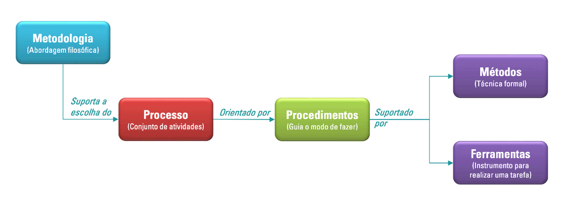

Visão Geral do Produto e Projeto
1. Visão Geral do Produto
1.1 Problema
Atualmente, a equipe FGR (Formula Racing Gama) da Universidade de Brasília enfrenta desafios significativos na gestão e divulgação das vendas de seus produtos, especialmente camisetas. As vendas são realizadas principalmente por meio de redes sociais e comunicações via WhatsApp, o que resulta em dificuldades no controle de estoque, acompanhamento das transações e consolidação de dados financeiros. Este método descentralizado limita a eficiência operacional, cria inconsistências nos registros de vendas e aumenta o esforço manual necessário para gerenciar pedidos.
Além disso, esse processo apresenta as seguintes complicações principais:
-
Erros em Processos Manuais: O controle de vendas e estoque, realizado de forma manual, está sujeito a falhas que comprometem a precisão das informações e dificultam a tomada de decisão.
-
Ineficiência na Comunicação: A divulgação de produtos e do propósito da equipe é limitada a redes sociais e WhatsApp, restringindo o alcance ao público e prejudicando a promoção da marca e de seus patrocinadores.
-
Dificuldade na Promoção de Patrocinadores: O método atual não permite uma exibição eficiente e impactante dos patrocinadores, o que pode enfraquecer os benefícios oferecidos a eles.
-
Dificuldade na Gestão de Estoque: O controle manual do estoque aumenta a probabilidade de erros, como vendas de produtos fora de estoque ou discrepâncias nos registros.
-
Falta de Centralização e Profissionalismo: A ausência de uma plataforma estruturada compromete a imagem da equipe, transmitindo desorganização e dificultando a consolidação de novas oportunidades de negócio. Adicionalmente, a ausência de um canal oficial e estruturado impacta negativamente a visibilidade e a promoção da equipe junto a seus patrocinadores e apoiadores. Uma plataforma que centraliza as vendas e também permite a apresentação institucional da equipe, bem como a divulgação de seus patrocinadores, é essencial para fortalecer a imagem da equipe, melhorar a experiência de compra dos clientes e atrair novos parceiros.
Por isso, o desenvolvimento de um E-commerce personalizado para a FGR visa solucionar essas limitações, integrando funcionalidades de gestão de vendas, apresentação da equipe e exibição de patrocinadores, criando um canal profissional e eficiente que reflita o dinamismo e o espírito inovador da equipe.
1.2 Declaração de Posição Produto
| 🎯 Para | Público geral(divulgação e vendas) e FGR(gestão) |
|---|---|
| 📌 Necessidade | Necessidade de um ambiente mais organizado e estruturado para divulgação dos projetos da equipe em si, e uma plataforma que ajuda na venda dos produtos. Oferecer uma canal estruturado para a divulgação da equipe e dos patrocinadores. |
| 🛍️ O (nome do produto) | FGR E-commerce. |
| ⚙️ Que | Permite realizar vendas de forma eficiente, manter controle do gerenciamento de vendas e promover a equipe e patrocinadores um ambiente profissional e acessível. |
| ❌ Ao Contrário | De métodos manuais e descentralizados, como redes sociais e WhatsApp, que dificultam a gestão, geram incosistências nos registros e limitam a visibilidade dos patrocinadores. Sem o produto, a equipe continua enfrentando desafios operacionais e de crescimento. |
| ✅ Nosso Produto | Oferece uma solução integrada, que une funcionalidade, profissionalismo e uma experiência otimizada para clientes, com uma interface intuitiva que facilita a navegação, seleção de produtos e realização de pagamentos. Além disso, o desenvolvimento sustentável da equipe ao reduzir a dependência de processos manuais. |
1.3 Objetivos do Produto
Com isso, o gerenciamento de vendas e pedidos da equipe irá melhorar, uma vez que poderão ver se um pedido ainda deve ser entregue, assim como o número de pedidos em um determinado período facilitando o controle do estoque aliado a uma forma mais simples de analisar quais itens estão dando maior retorno financeiro e quais podem ser melhor divulgados.
Desta forma, o principal objetivo é a criação de uma plataforma integrada de marketplace para automatizar as vendas e o gerenciamento de produtos da FGR, otimizando os processos internos e fortalecendo a experiência dos clientes. Outros pontos importantes são:
- Introdução da equipe de competição para os visitantes do site, apresentando sua história, conquistas e integrantes, promovendo a identidade da equipe e fortalecendo sua conexão com o público;
- Destaque dos diferentes patrocinadores da FGR: oferecer uma seção dedicada para exibir os patrocinadores da FGR, valorizando a parceria e ampliando a visibilidade das marcas;
- Facilidade no Controle de Estoque: Permite que a equipe gerencie o estoque de maneira mais eficiente, identificando produtos mais vendidos e gerando insights para melhorias na divulgação e produção;
- Economia de tempo e automação: Reduzir a dependências de interações manuais entre os compradores e membros da equipe, economizando tempo e permitindo maior dedicação às atividades técnicas e estratégicas da FGR;
- Aprimoramento da Análise Financeira: Fornecer relatórios detalhados que auxiliem na análise do desempenho financeiro, facilitando decisões baseadas em dados sobre os produtos; Tais objetivos garantem que o produto não seja apenas uma ferramenta de vendas, mas uma solução completa que contribua para o crescimento sustentável da Fórmula Gama Racing, fortalecendo sua presença e promovendo maior eficiência interna entre os membros.
1.4 Tecnologias a Serem Utilizadas
| 💻 Categoria | 🛠️ Ferramentas/Tecnologias |
|---|---|
| 📌 Metodologias Ágeis | Scrum, XP |
| 🎨 Front-end | JavaScript |
| ⚙️ Back-end | Python |
| 🗄️ Banco de Dados | SQL |
| 📚 Frameworks | React, Django |
| 🎨 Prototipação | Figma |
| 💬 Comunicação | WhatsApp, Teams, Discord |
| 🔄 Versionamento de Código | Git, GitHub |
2. Visão Geral do Projeto
2.1 Ciclo de vida do Projeto de Desenvolvimento de Software

Aliado ao método ágil, será utilizado o par ScrumXP, uma combinação entre as práticas do Scrum e do Extreme Programming, devido à sua forte sinergia. Para isso, o guia do Scrum e o guia do XP serão consultados quando houver dúvidas, auxiliando na organização e no desenvolvimento do produto de software. O Scrum proporciona um desenvolvimento dividido em sprints, nas quais, durante um período fixo de tempo, será realizada uma quantidade variável de histórias de usuário. Sprints que possuem poucas histórias de usuário geralmente indicam que as mesmas são de maior complexidade, e vice-versa. Com isso, o desenvolvimento passa a ser feito de forma iterativa e incremental, algo que é benéfico para a equipe de desenvolvedores e para o dono do software, uma vez que este poderá ser visto várias vezes durante a sua concepção, permitindo melhorias e novas ideias para os requisitos.
Derivado do XP, a programação em pares estará presente no trabalho da equipe. Com ela, um desenvolvedor menos experiente pode programar com um mais experiente, algo que traz benefícios para o programador experiente, que tem a chance de praticar ainda mais seu conhecimento, e para o menos experiente, que estará aprendendo novos conceitos e partes do projeto. Assim, as partes do produto de software passam a ser conhecidas por, no mínimo, duas pessoas, facilitando a sua manutenção, dado que uma parte específica do código não dependerá de somente uma pessoa para fazer melhorias e corrigir bugs.
Uma prática essencial será a integração contínua, onde o código será frequentemente integrado ao repositório principal e testado automaticamente. Isso reduz o risco de conflitos entre diferentes partes do código e garante que o produto esteja sempre em um estado funcional. Feedback regular será incorporado em cada etapa, tanto dos membros da equipe quanto do cliente, para garantir que o produto final atenda aos requisitos esperados.
Dessa forma, o desenvolvimento do marketplace será iterativo, com melhorias contínuas a cada ciclo, e incremental, adicionando novas funcionalidades em etapas. Isso permite que o produto seja funcional desde as primeiras entregas, mesmo que com recursos limitados, e vá evoluindo até sua versão final. A equipe se beneficiará do aprendizado ao longo do processo, ajustando-se a novos desafios e incorporando feedback para criar um produto robusto e bem alinhado às expectativas do cliente.
Por fim, com essa abordagem ágil, o projeto se tornará mais do que uma simples solução de marketplace; será um exemplo de desenvolvimento organizado, colaborativo e inovador, garantindo entregas consistentes e de alta qualidade. Teams e WhatsApp também serão utilizados como ferramentas de comunicação da equipe.
2.2 Organização do Projeto
| Papel | Atribuições | Responsável | Participantes |
|---|---|---|---|
| Desenvolvedor | Codificar o produto, codificar testes unitários, realizar refatoração | Matheus | Toda a Equipe |
| Analista de Qualidade | Garantir a qualidade do produto, garantir o cumprimento do conceito de pronto, realizar inspeções de código | – | Toda a Equipe |
| Cliente | Apresentar os Requisitos do projeto, entregar as informações necessárias para a construção do projeto e validação do software | Gabriel, Italo (Membros da FGR) | Eduardo, Matheus |
| Scrum Master | Garantir a qualidade do produto, garantir o cumprimento do conceito de pronto, realizar inspeções de código. | Matheus | Matheus |
| Product Owner | Atualizar o escopo do produto, organizar o escopo das sprints, validar as entregas. | Gabriel | Eduardo |
2.3 Planejamento das Fases e/ou Iterações do Projeto
| Sprint | Produto (Entrega) | Data Início | Data Fim | Entregável(eis) | Responsaveis | % conclusão |
|---|---|---|---|---|---|---|
| Sprint 1 | Entender a Definição do Produto /tecnologias | 01/11/2024 | 01/11/2024 | Reunião no com monitor | todos | 100% |
| Sprint 2 | Requisitos - E-comerc | 11/11/2024 | 11/11/2024 | Reunião no teams - conversa com cliente | todos | 100% |
| Sprint 3 | Requisito de alta / média e baixa prioridade | 19/11/2024 | 19/11/2024 | Reunião no teams - conversa com cliente | todos | 100% |
| Sprint 4 | Prototipação das telas - Figma e ajuste dos requisitos | 26/11/2024 | 26/11/2024 | Reunião no teams - conversa com cliente | todos | 100% |
| ... | ... | ... | ... |
2.4 Matriz de Comunicação
| Descrição | Área/ Envolvidos | Periodicidade | Produtos Gerados |
|---|---|---|---|
| Reunião com cliente Acompanhamento dos Riscos, Compromissos, Ações Pendentes, Indicadores | Equipe Monitor | Semanal | Ata de reunião Apresentação do que foi feito Relatório de situação do projeto |
| Quinzenal | |||
| - Acompanhamento das Sprints | Equipe Monitor | Semanal | Reunião, e Detalhamento das atividades |
2.5 Gerenciamento de Riscos
| Risco | Grau de Exposição | Mitigação | Plano de Contingência |
|---|---|---|---|
| Mau entendimento do backlog do projeto | Alto | Tirar todas as dúvidas com o Scrum Master e o Product Owner | Reunião com a equipe para esclarecimento |
| Falta de experiência da equipe em tecnologias e linguagens de programação específicas | Médio | Estudos individuais/Leitura da documentação | Os mais experientes e com mais facilidade, ajudar os que têm dificuldade, auxiliando no aprendizado |
| Atraso na entrega das Sprints | Alto | Manter comunicação regular e sincera com toda a equipe | Organizar cronograma e negociar prazos de entrega |
| Definição incorreta do escopo do projeto | Muito alto | Criação de reuniões para o levantamento de requisitos além de produzir um backlog claro para entendimento dos desenvolvedores e clientes. | |
| Problemas no desenvolvimento da interface de usuário | Médio a baixo | Realizar testes com o protótipo criado para verificar sua usabilidade. | Atualização do design deixando-o mais acessível para os usuários. |
| Atrasos no desenvolvimento do produto de software | Alto | Definir para as sprints histórias de usuário que sejam condizentes com o período da sprint. Dividir histórias de usuário grandes e complexas e versões menores e mais simples. | Focar no desenvolvimento das funcionalidades principais do projeto. |
| Problemas na integração dos métodos de pagamento | Muito alto | Realizar diversos testes com o intuito de encontrar possíveis bugs evitando que estes cheguem no produto final. | Redirecionar o cliente para o whatsapp da equipe para que possa ser negociado o pagamento. |
| Falhas na segurança do perfil de administrador do site | Alto | Exigir a criação de senhas com múltiplos tipos de caracteres e implementar autenticação de dois fatores. |
2.6 Critérios de Replanejamento
O que deve ser feito para gerenciar possíveis alterações ou mudanças nos requisitos/backlog:
1. Deve ser avaliado o impacto da mudança e logo revisar e atualizar a documentação comunicando os envolvidos, dessa forma ajustar o plano do projeto reavaliando os riscos para a nova aprovação e implantar as mudanças. Deve-se pensar e criar um gerenciamento de mudanças, mantendo uma comunicação ativa na equipe.
Problemas no desenvolvimento da interface: uma navegação confusa ao cliente é um fator de trabalho não entregue corretamente em determinada sprint, podendo ser se tornar débito técnico, pois a falta de uma funcionalidade exigida e não entregue ao cliente, pode tornar a navegação na aplicação comprometida.
1. Devem ser feitos testes de usabilidade e um design cliente como centro, fazendo uma documentação clara com as devidas manifestações do cliente.
Atrasos no desenvolvimento do software vem da falta de uma planejamento e gerenciamento em equipe, pois cada passo de um desenvolvedor é um passo para outro desenvolvedor e o projeto entre em atrasos causará insatisfação do cliente.
1. Devem ser feitas como replanejamento avaliar o atraso com suas causas e efeitos devendo rever os requisitos isso leva ao replanejamento do cronograma, como estratégia devem diminuir os testes e otimizar tarefas.
3. Processo de Desenvolvimento de Software
O processo de desenvolvimento será dividido em etapas sequenciais e bem definidas, começando pelo planejamento, onde o Product Owner será responsável por definir e priorizar o backlog de requisitos, alinhando os objetivos do projeto com as necessidades do cliente. O planejamento determinará também o que será entregue em cada sprint, garantindo que todos os membros da equipe estejam alinhados com as expectativas do cliente e com o que precisa ser desenvolvido.
Na fase de prototipação, será utilizado o Figma para criar o design do layout do website, com base nos requisitos previamente estabelecidos. Este protótipo servirá como uma visão inicial do produto, permitindo que ajustes sejam feitos de forma ágil à medida que o desenvolvimento avança. A equipe de desenvolvedores será responsável pela implementação do código, tanto para o front-end quanto para o back-end, utilizando as práticas estabelecidas no backlog. Para isso, será adotada a prática de programação em pares, conforme a metodologia XP, visando promover a troca de conhecimentos entre desenvolvedores, além de garantir um código mais robusto e de fácil manutenção.
O desenvolvimento será realizado utilizando as seguintes tecnologias: o backend será construído com Python utilizando o framework Django, o frontend será desenvolvido com React.js e o banco de dados será SQL.
Haverá duas reuniões semanais para garantir que o processo esteja alinhado e as expectativas sejam atendidas. Uma reunião será realizada com o cliente, ao fim de cada sprint, para revisar os avanços e discutir ajustes ou novas ideias. A outra reunião ocorrerá com a equipe para discutir o progresso e planejar as próximas etapas.
4. Declaração de Escopo do Projeto
4.1 Backlog do Produto
- Site de e-commerce para vendas de produtos da equipe.
- Página de apresentação da equipe e membros.
- Sistema de login para administradores e clientes.
- Sistema de vendas com opções pagamento em pix e boleto.
- Catálogo de produtos da equipe.
- Página de patrocinadores.
4.2 Perfis
| # | Nome do perfil | Características do perfil | Permissões de acesso |
|---|---|---|---|
| Usuário | Usuário é o perfil de acesso público a aplicação, onde para ele estarão disponíveis as páginas de acesso geral e loja. | Cadastro e login, configurações de conta, interação com o site, realizar compras e explorar catálogo | |
| Administrador | Responsável por gerenciar usuários, alterar configurações do sistema, gerenciar pagamento e fazer manutenções caso necessário. | Configurar usuários, pagamento, conteúdo da aplicação e acesso aos logs e dados |
4.3 Cenários
Tabela : Cenários a serem desenvolvidos
| Numeração do cenário | Cenário | Requisitos Obrigatórios (MUST) | Requisitos desejáveis ((Should/Could) | Forma de Elicitação |
|---|---|---|---|---|
| 1 | Cadastro de Usuários | Desenvolver as telas de Cadastro para Usuários solicitando informações como: email, senha, gênero, telefone e data de nascimento | Implementar um login/cadastro com email institucional, Conta Google ou Conta Facebook | Reunião com a equipe e o cliente |
| 2 | Login de Usuários | Desenvolver a tela para Login do Usuário com a solicitação de email e senha cadastrados, recuperação de senha e cadastro de usuário(caso não exista um cadastro) | Implementar um login/cadastro com email institucional, Conta Google ou Conta Facebook | Reunião com a equipe e o cliente |
| 3 | Login do administrador | Permitir o login/cadastro de uma conta administradora única para gerenciamento de vendas e estoque | Implementar a possibilidade de login usando o email institucional | Reunião com a equipe e o cliente |
| 4 | Página principal (HOME) | Página principal para exibir as informações gerais do site como banner promocional, atalhos para outras seções, e informações da equipe | Desenvolver um chatbot para suporte ou pop-up com link para whatsapp | Reunião com a equipe e o cliente |
| 5 | Aba para E-commerce | Desenvolver a aba para E-commerce para visualizar os produtos | Visualizar a frente e verso do produto ao passar o mouse e ampliar | Reunião com a equipe e o cliente |
| 6 | Carrinho de compras | Exibir um sumário dos produtos selecionados e os valores a pagar | Finalizar a compra com os dados da conta cadastrada do usuário | Reunião com a equipe e o cliente |
| 7 | Tela de Pagamento | Desenvolver a tela com as informações da compra, métodos de pagamento (pix e boleto) e local de entrega | Permitir o pagamento por cartão de débito e crédito | Reunião com a equipe e o cliente |
| 8 | Painel de Controle (ADMIN) | Desenvolver um painel de acesso restrito ao administrador para controlar gráficos de vendas e estoque | Disponibilizar gráficos interativos | Reunião com a equipe e o cliente |
| 9 | Tela para edição (ADMIN) | Permitir ao administrador editar as telas principais, como editar fotos e textos. | - | Reunião com a equipe e o cliente |
Tabela : Cenários funcionais
| Sistema: WebFGR – Cenários funcionais | ||
|---|---|---|
| Numeração do cenário | Nome do cenário | Sprint |
| 2 | Cadastro de Usuários | 1 |
| 2 | Login de Usuários | 1 |
| 3 | Login do Administrador | 1 |
| 4 | Página Principal | 2 |
| 5 | Aba E-commerce | 3 |
| 6 | Carrinho de Compras | 3 |
| 7 | Tela de Pagamento | 4 |
| 8 | Painel de Controle (ADMIN) | 5 |
| 9 | Tela de Edição (ADMIN) | 5 |
4.4 Tabela de Backlog do Produto
| Numeração (Cenário / Requisito) | Sprint | Nome do Requisito | Tipo de Requisito (Funcional / Não Funcional) | Priorização (Must, Should, Could) | Descrição Sucinta | User Stories (U.S.) Associadas |
|---|---|---|---|---|---|---|
| 1 | 1 | Cadastro de Usuários | Funcional | Must | Permitir o cadastro de novos usuários com campos obrigatórios (nome, e-mail, senha). | "Como usuário, quero me cadastrar no sistema para acessar as funcionalidades de compra." |
| 2 | 1 | Login de Usuários | Funcional | Must | Permitir que usuários façam login no sistema utilizando e-mail e senha. | "Como usuário, quero fazer login para acessar minha conta e realizar compras." |
| 3 | 1 | Login do Administrador | Funcional | Must | Permitir que o administrador acesse o sistema com um login único e diferenciado. | "Como administrador, quero acessar o sistema para gerenciar produtos, pedidos e usuários." |
| 4 | 2 | Página Principal (HOME) | Funcional | Should | Desenvolver a home do site com banners promocionais e atalhos para páginas principais. | "Como visitante, quero acessar a home do site para conhecer os produtos e navegar para outras seções." |
| 5 | 2 | Aba E-commerce | Funcional | Must | Exibir os produtos disponíveis para venda com informações detalhadas e filtros. | "Como usuário, quero visualizar os produtos disponíveis para escolher o que comprar." |
| 6 | 3 | Carrinho de Compras | Funcional | Must | Permitir que usuários adicionem produtos ao carrinho e visualizem o total da compra. | "Como usuário, quero adicionar itens ao carrinho para revisar minha compra antes de finalizar." |
| 7 | 4 | Tela de Pagamento | Funcional | Must | Implementar métodos de pagamento (PIX, boleto). | "Como usuário, quero finalizar minha compra utilizando um método de pagamento seguro." |
| 8 | 5 | Painel de Controle (ADMIN) | Funcional | Must | Desenvolver interface para que o administrador gerencie produtos, pedidos e relatórios. | "Como administrador, quero acessar um painel para monitorar vendas, gerenciar estoque e visualizar relatórios." |
| 9 | 5 | Tela de Edição (ADMIN) | Funcional | Must | Permitir que o administrador adicione, edite ou remova produtos do catálogo. | "Como administrador, quero atualizar o catálogo de produtos para manter as informações corretas e atrativas." |
| 10 | 3 | Segurança de Dados | Não Funcional | Should | Implementar HTTPS para criptografar as comunicações entre o cliente e o servidor. | "Como usuário, quero que meus dados pessoais e de pagamento sejam protegidos ao realizar compras no site." |
| 11 | 5 | Documentação do Código | Não Funcional | Could | O código deve ser documentado para facilitar a manutenção e compreensão pela equipe. | "Como desenvolvedor, quero ter o código bem documentado para realizar alterações futuras de maneira mais eficiente." |
| 12 | 6 | Conformidade com o LGPD | Não Funcional | Should | Garantir que o sistema esteja em conformidade com a Lei Geral de Proteção de Dados (LGPD). | "Como usuário, quero que meus dados sejam tratados de forma segura e em conformidade com as leis de proteção de dados." |
| 13 | 6 | Backup Automático de Dados | Não Funcional | Should | Configurar backups automáticos do banco de dados para evitar perda de informações. | "Como administrador, quero ter backups automáticos para restaurar dados em caso de falhas ou ataques ao sistema." |
5. Referências Bibliográficas
-
SCHWABER, Ken; SUTHERLAND, Jeff. Guia do Scrum: o guia definitivo para o Scrum: as regras do jogo. Versão 2020. Disponível em: https://scrumguides.org/docs/scrumguide/v2020/2020-Scrum-Guide-PortugueseBR-3.0.pdf. Acesso em: dez. 2024.
-
Universidade Federal de Pernambuco. Guia prático para a metodologia XP. Disponível em: https://aprender3.unb.br/pluginfile.php/3028026/mod_resource/content/1/4a.GUIA%20XP_UFPE.pdf. Acesso em: 30 nov. 2024.
Histórico de Revisões
| Data | Versão | Descrição | Autor |
|---|---|---|---|
| 30/11/2024 | 0.1 | Início do Documento Visão | Eduardo de Almeida Ferreira Esdras de Sousa Nogueira Felipe de Aquino Campelo João Vitor Sales Ibiapina Luiz Guilherme Morais da Costa Faria Matheus Menezes Rodrigues Miguel Pires Gomes Pedro Rocha Thiago Melo Tonin Uires Carlos de Oliveira |
| 02/12/2024 | 0.1 | Revisão final do Documento de Visão | Eduardo de Almeida Ferreira Esdras de Sousa Nogueira Felipe de Aquino Campelo João Vitor Sales Ibiapina Luiz Guilherme Morais da Costa Faria Matheus Menezes Rodrigues Miguel Pires Gomes Pedro Rocha Thiago Melo Tonin Uires Carlos de Oliveira |